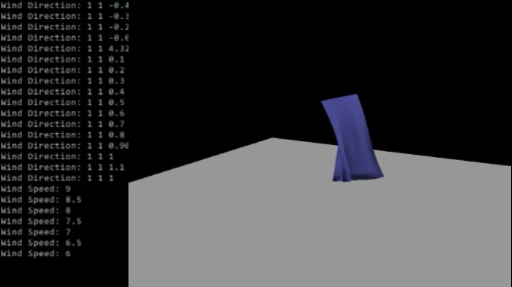
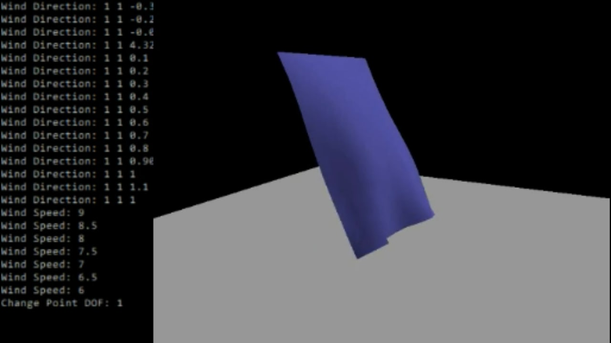
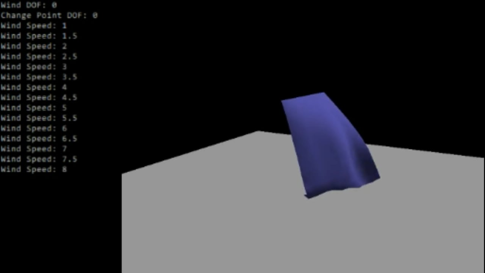
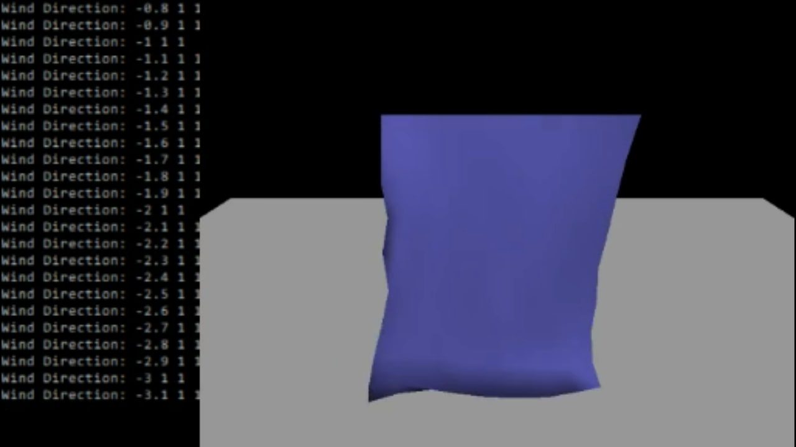
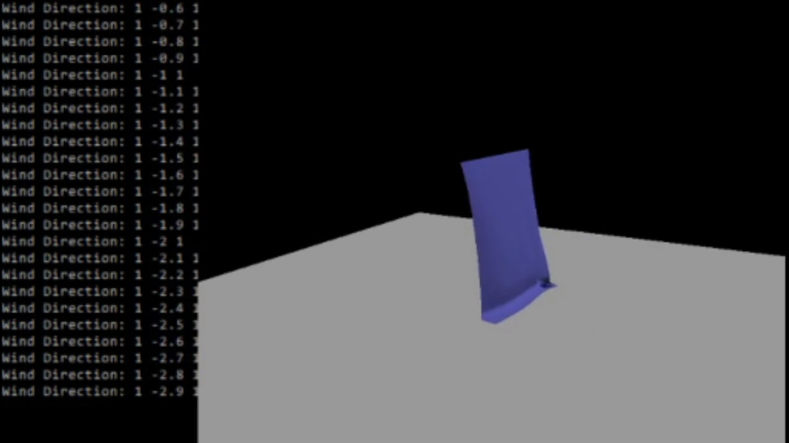
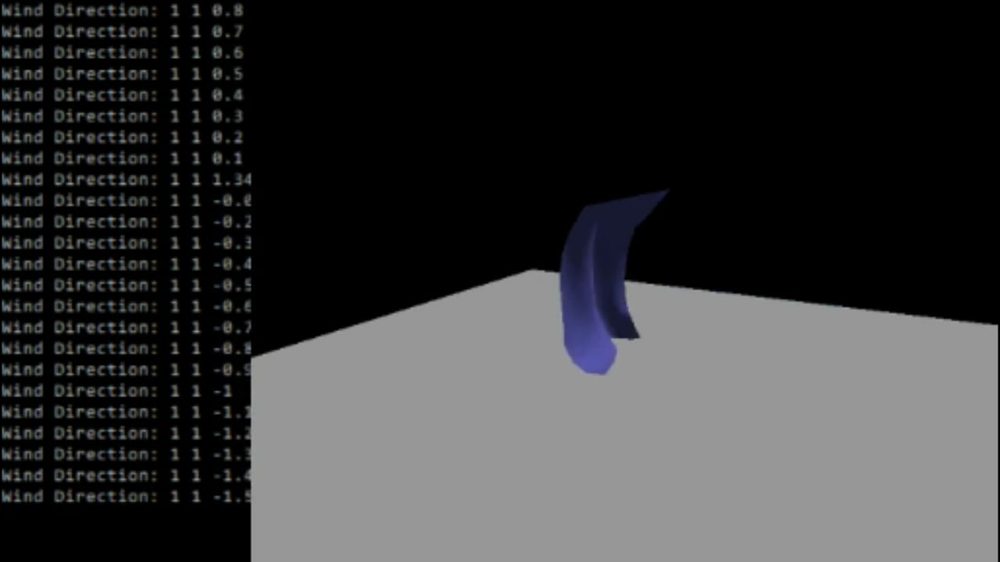
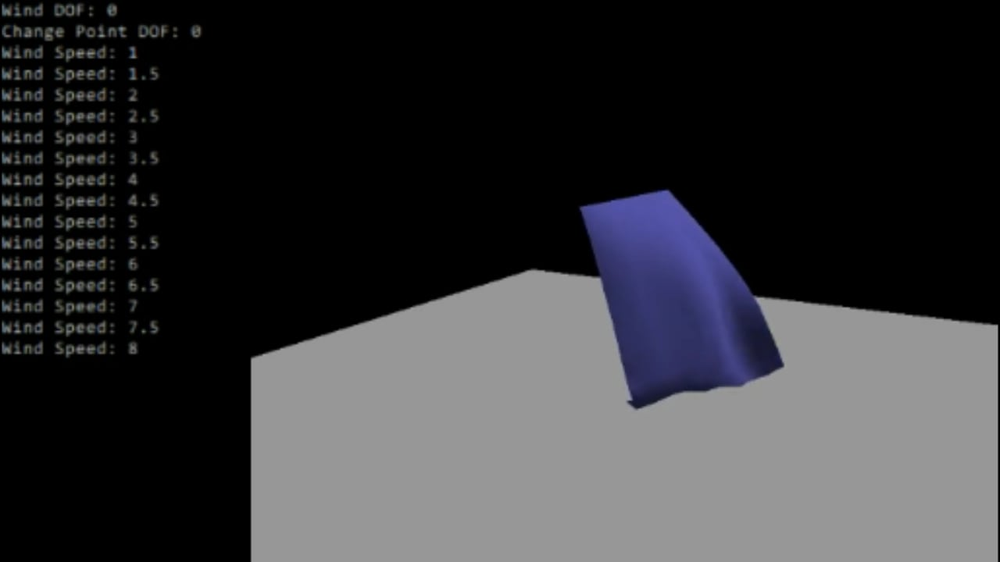
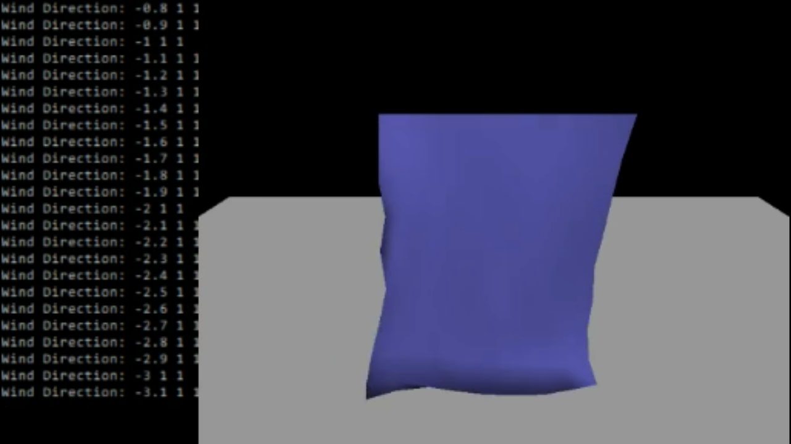
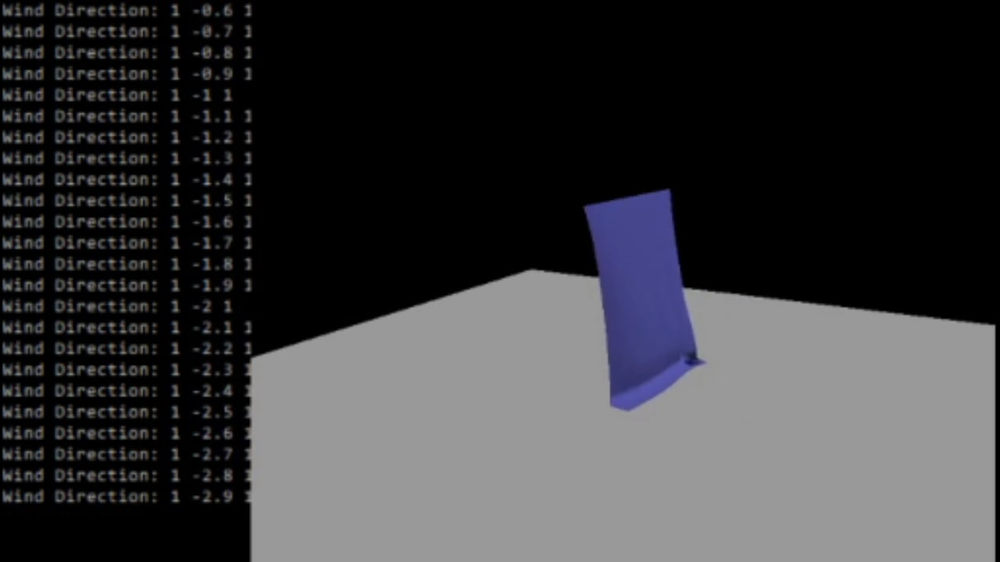
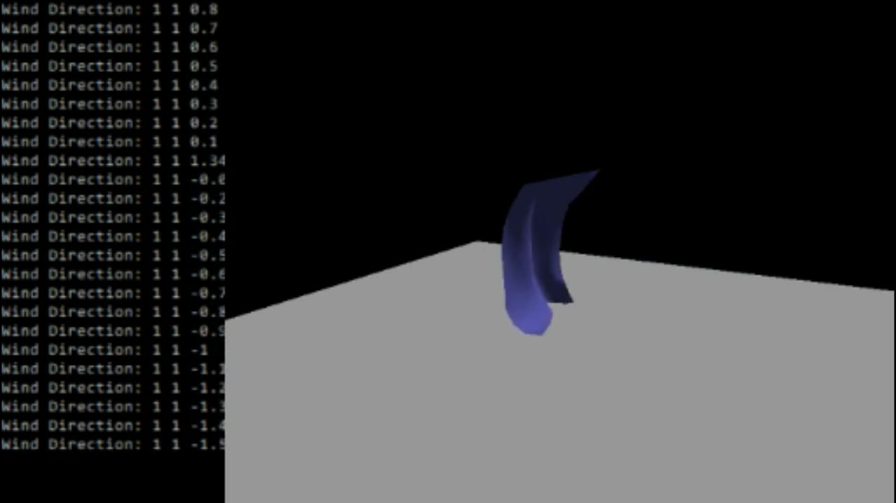

Cloth Simulation
C++ OpenGLThis project was fourth assignment for UCSD's Computer Animation class. The purpose of this project was to simulate a piece of cloth affected by the wind.


 







Goals for this Project:
-
Simulate a piece of cloth using particles, spring-dampers, and triangular surfaces.
- The cloth should include the effects of uniform gravity, spring elasticity, and damping.
- Add a plane below the cloth and enforce a simple ground plane collision when the cloth touches the plane.
- Add "wind" and include the effects of aerodynamic drag to the cloth.
- Add controls to move the fixed cloth particles and the wind's speed and direction.
Keyboard Key Functions:
- a: Go to the previous DOF for the wind direction (z → y → x)
- d: Go to the next DOF for the wind direction (x → y → z)
- i: Increase value of the current DOF for the fixed particles
- j: Go to the previous DOF for the fixed particles (z → y → x)
- k: Decrease the value of the current DOF for the fixed particles
- l: Go to the next DOF for the fixed particles (x → y → z)
- s: Decrease the value of the current DOF for the wind direction
- S: Decrease the value of the wind speed
- w: Increase the value of the current DOF for the wind direction
- W: Increase the value of the wind speed
Mouse Functionality:
- Hold the left mouse button and move the cursor left or right to rotate the camera around the center of the world.
- Hold the right mouse button and move the cursor left or right to change the distance between the camera and the origin.